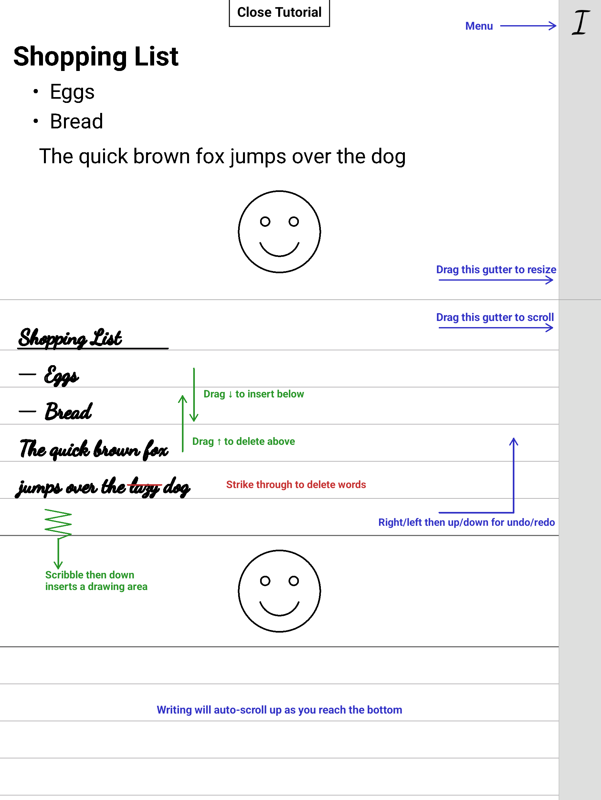

A handwriting app for Android e-ink tablets.
Write naturally. See clean text appear as you go.

I made InkUp because I just wanted to write. No menus, no toolbars, no page turns, no fussing with settings. Just put pen to paper and have a well-formatted document appear.
Your handwriting is recognized as you go. As lines scroll up off the writing area, they appear as clean, formatted text above. You always see your recent handwriting below and the finished document above.
As you write toward the bottom of the screen, pause and the page scrolls up automatically. You never need to touch a scroll bar or turn a page. Just keep writing.
Scribble then drag down to insert a free-form drawing area between text lines. Draw diagrams, sketches, or anything — strokes render inline in the finished document and export as SVG in markdown.
Everything is done with the pen. No buttons, no menus.
Structure your document with simple conventions:
Export your document as markdown to share or edit anywhere.